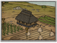
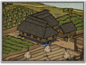

Requires
- Buildings: 
Enables
- Buildings: 
Basic Building Statistics (can be modified by difficulty level, arts, skills, traits and retainers)
- Cost: 950
- +750 to wealth from farms in this province
- Provides food: 2
Description
Empty bellies are never found in loyal men.
Farmers must use every scrap of land as efficiently as possible to grow enough food to survive and pay their taxes. By using water intelligently, more land can be cultivated and to better effect. The result is that the wealth of a province is improved, along with its potential to be taxed. The landscape of Japan was, and is, dominated by mountains, volcanoes and densely wooded areas, leaving very little good, level farmland. To overcome this, farmers had to exploit the numerous small rivers by diverting and damming them to irrigate their lands. In addition, wet farming overcomes the acidic soils produced by volcanic activity and keeps the growth of weeds to a controllable minimum. Organised irrigation in Asia can be traced back to ancient China where, in 256 BC, a system was constructed at Dujiangyan to divert water from the Min River. This not only prevented flooding and watered crops but also allowed the river to be used for military transports. As with many other ideas, the Japanese copied the idea from the Chinese and cleverly refined it over the centuries. Dujiangyan is still impressive today.